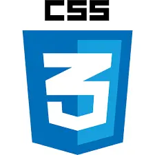

Dilusha Hesaranga
Dilusha Hesaranga
4.9/5
I’m Dilusha Hesaranga, a UI/UX designer and developer crafting digital experiences that go beyond aesthetics to solve real problems. I partner with businesses and startups to transform scattered ideas into clean, intuitive, and conversion-focused designs—turning complex user journeys into seamless interactions that drive results.
Contact Me
Overview
Branding, UI/UX & Visual Design Director crafting strategic, high-impact digital experiences that blend creative direction with performance-driven results for modern brands worldwide.
Reliable
Professional
Creative
Responsive
Every design decision backed by purpose
Experiences crafted for real human interaction
From idea to launch without compromise
Projects
From concept to launch, I create impactful, high-converting web experiences driven by strategy, precision, and a passion for building products that lead.
Web Design / UI UX
A clean, responsive website designed to present services clearly, build trust, and convert visitors into clients.
View ProjectBranding / Development
A professional portfolio layout created to showcase work, improve personal branding, and support client inquiries.
View ProjectServices
I craft designs that raise your brand's value, connect deeply with people and get the results you need.
01
I position businesses with strong visual frameworks, strategic logos, and complete identity systems.
02
I design social media visuals and ad creatives that attract attention, increase engagement, and support campaign results.
03
I design user-focused digital experiences that make websites and apps easier to use, clearer, and more effective.